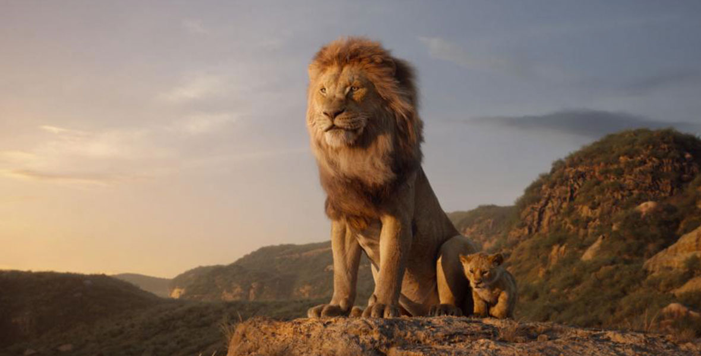

Lion King
Lion King, The (film) Photoreal animated adaptation of the 1994 Disney feature that journeys to the African savanna where a future king is born. Simba idolizes his father, King Mufasa, and takes to heart his own royal destiny, but not everyone in the kingdom celebrates the new cub’s arrival. Scar, Mufasa’s brother and former heir to the throne, has plans of his own. The battle for Pride Rock is ravaged with betrayal, tragedy, and drama, ultimately resulting in Simba’s exile. With help from a curious pair of newfound friends, Simba will have to figure out how to grow up and take back what is rightfully his. Directed by Jon Favreau. Released July 19, 2019, also in 3D, as well as 2D and 3D IMAX, after international releases in China and other countries beginning July 12. Stars Donald Glover (Simba), Beyoncé Knowles-Carter (Nala), James Earl Jones (Mufasa), Seth Rogen (Pumbaa), Chiwetel Ejiofor (Scar), Alfre Woodard (Sarabi), Billy Eichner (Timon), John Kani (Rafiki), John Oliver (Zazu), Florence Kasumba (Shenzi), Eric André (Azizi), Keegan-Michael Key (Kamari), JD McCrary (Young Simba), Shahadi Wright Joseph (Young Nala). 118 min. To achieve the characters’ photorealistic look, filmmakers studied animals both in Africa and at Disney’s Animal Kingdom. CG environments were uniquely designed within a virtual-reality game engine, which allowed filmmakers to walk into a virtual set, where they established camera shots, choreographed movements, and adjusted lighting and set pieces in real time before sending the scenes to animators to create. Returning to contribute music were original The Lion King songwriters Elton John and Tim Rice, composers Hans Zimmer and Lebo M, arranger Mark Mancina, orchestrator Bruce Fowler, and conductor Nick Glennie-Smith. Pharrell Williams produced five additional songs on the soundtrack. All of the songs have been retained from the 1994 animated feature, with three more added: “Spirit, “written by Timothy McKenzie, Ilya Salmanzadeh, and Beyoncé; “Never Too Late,” written by Elton John and Tim Rice; and “He Lives in You,” from the Broadway version of the film, written by Mark Mancina, Jay Rifkin, and Lebo M. Nominated for an Academy Award for Visual Effects by Robert Legato, Adam Valdez, Andrew R. Jones, and Elliot Newman.